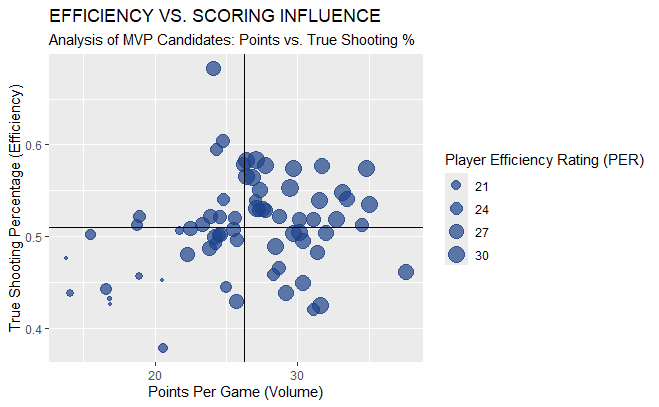
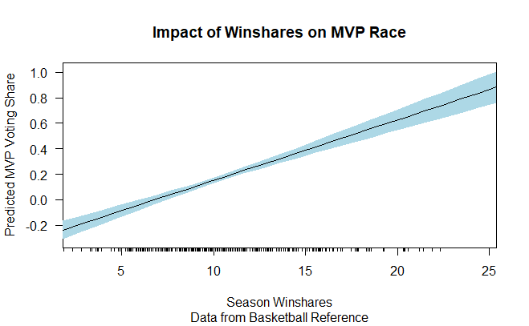
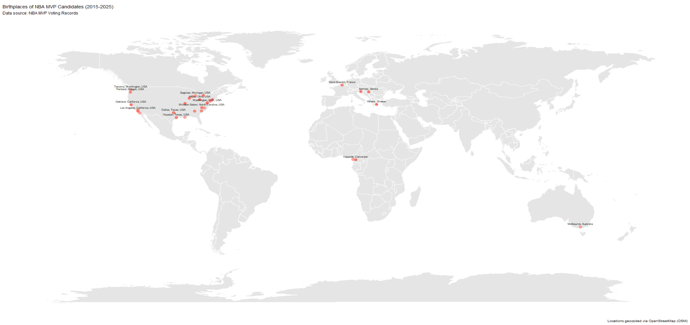

Lab TA
Instruct the lab section of the Probability & Statistics course, teaching 30 undergraduates to use R for statistical problem solving.
Senior at Rice University combining data science with a passion for sports — turning game film, tracking data, and box scores into insights coaches and analysts can act on.

I'm a Senior at Rice University studying Sports Analytics and Statistics. My goal is to combine data science with my passion for sports, while maintaining civic service throughout my career.
As a Basketball Analytics Scout at SkillCorner, I was part of a small team producing high-quality datasets for analytics firms and professional teams. Deciphering the right annotations for in-game events taught me to operate in grey areas, problem-solve toward the goal at hand, and pay close attention to detail.
Today I lead the Technical Projects subteam of the Rice Sport Analytics Team, serve as a Lab TA for Rice Statistics, and co-host Against the Grain on KTRU Sports.
Instruct the lab section of the Probability & Statistics course, teaching 30 undergraduates to use R for statistical problem solving.
Lead the Technical Projects subteam within the larger Rice Sport Analytics Team.
Help build scouting and head-to-head reports on upcoming opponents, giving the Rice Women's Basketball coaching staff data-driven insights before games.
Returned for a second year. Helped develop datasets spanning thousands of NCAA, FIBA, and NBA games — pristine data fit for the highest level of modeling by high-profile analytics firms and professional teams.
Co-host of Against the Grain, Rice University's latest sports talk show, providing analytical insight on and off air while highlighting Rice Athletics and Houston sports.
Selected by the Office of Access and Institutional Excellence to support students of all backgrounds. Presented to 100+ new students and advisors during Orientation Week.
Elected to represent the needs, grievances, and wishes of my classmates.
Worked school breaks to support myself through college, sharpening decision-making under pressure while delivering clean, efficient service.

An analysis of NBA player performances and voting patterns from 1956–2025. Using regression on PPG, Win Shares, PER, and games played, the study builds an Optimal MVP Profile and tracks the 2025–26 race week by week.
Read the Study →An R Shiny dashboard that turns Rice University's public crime log into maps, charge breakdowns, time-of-day trends, and case outcomes — built to the NIST AI Risk Management Framework, with jittered locations and reporting-time data to protect the people behind each record.
See the Project →
Why Win Shares are a tighter, more reliable predictor of MVP vote share than raw scoring.

Mapping MVP performance by birthplace to show the award's shift to a borderless talent pool.
Head-to-head opponent reports for the Rice Women's Basketball coaching staff, built with the Rice Sport Analytics Team.
Open to opportunities in sports analytics, data science, and research.